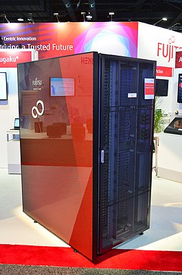

Fugaku
Японскй суперкомпьютер
Названный в честь альтернативного книжного названия горы Фудзи, установлен в Центре вычислительных наук Института физико-химических исследований (RIKEN) в Кобе, Япония. В июне 2020 года стал самым быстрым суперкомпьютером в мире в рейтинге Top500. Впервые в истории занял первое место во всех основных суперкомпьютерных рейтингах — Top500, LINPACK, HPCG[en], HPL-AI и Graph500. Начал разрабатываться в 2014 году как продолжатель K computer. Официально введён в эксплуатацию 9 марта 2021 года, хотя отдельные компоненты компьютера начали работу в июне 2020 года. Это первый суперкомпьютер на базе ARM, который занял первое место в Top500.
После небольшой модернизации, по состоянию на ноябрь 2020 года, Фугаку увеличил свою производительность в суперкомпьютерных рейтингах HPC-AI и HPL-AI со смешанной точностью до 2,0 эксафлопс. Фугаку достиг первого места в рейтингах, включая LINPACK, Graph500, HPL-AI и HPCG[en]. Ни один из предыдущих суперкомпьютеров никогда не возглавлял сразу все четыре рейтинга. Фугаку — первый суперкомпьютер, достигший производительности выше одного эксафлопса любой точности на любом типе оборудования, продемонстрировав рост производительности на 42 %. Интересно, что количество ядер Arm A64FX было увеличено только на 4,5 %, до 7 630 848, но измеренная производительность выросла намного больше в этом рейтинге и немного больше в Top500, или на 6,4 %, до 442,010 петафлопс, что является новым мировым рекордом. В рейтинге High-Performance Conjugate Gradient (HPCG) производительность выросла более чем в 5,4 раза.
Производительность Фугаку (442,01 петафлопс) превосходит совокупную производительность идущих за ним следом 4 суперкомпьютеров (399,7146 петафлопс) или почти 5 суперкомпьютеров (461,1591 петафлопс) из списка Top500 и на 45 % превосходит производительность всех остальных суперкомпьютеров из первой десятки списка в суперкомпьютерном рейтинге HPCG

Для сравнения,
самый первый компьютер -
Apple Macintosh
Сегодня исполнилось ровно 36 лет с того дня, когда легендарный со-основатель и генеральный директор компании Apple Стив Джобс (Steve Jobs) представил первый компьютер Macintosh.
По сегодняшним меркам спецификации системы звучат совсем скромно. Она была построена на процессоре Motorola 68000, работавшем на частоте 8 МГц, в распоряжении которого было 128 КБ оперативной памяти. Дисковая подсистема была представлена дисководом, рассчитанным на дискеты формата 3,5 дюйма. Все компоненты компьютеры были помещены в общий корпус с монитором на монохромном кинескопе размером 9 дюймов по диагонали. Такая машина стоила 2495 долларов.